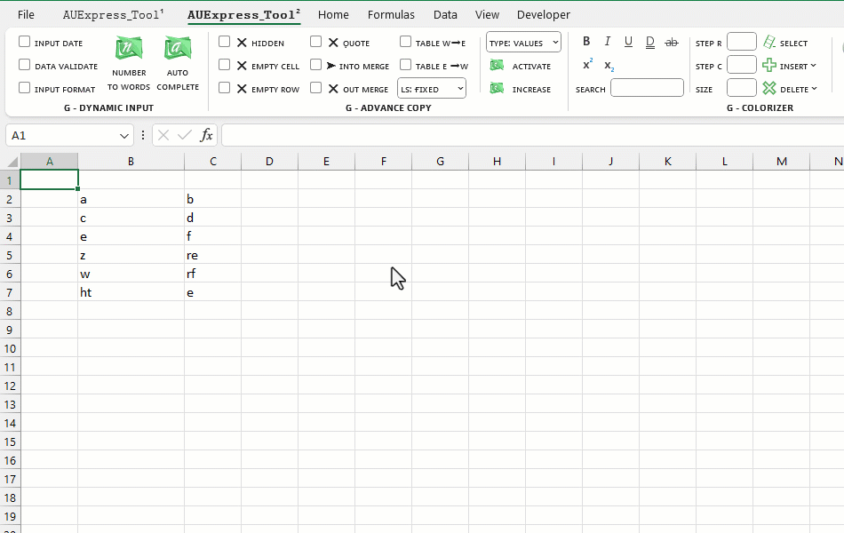

VD1: Chèn thêm 2 dòng trống xen kẽ sau mỗi dòng dữ liệu.
Related function
COLORIZER (feature) Tô màu, tuỳ chỉnh định dạng ký tự, font, màu sắc, đường viền của bảng tính.
LOCAL FOLDERS Quản lý file, thư mục cục bộ (local disk) từ Excel.
Return to Home